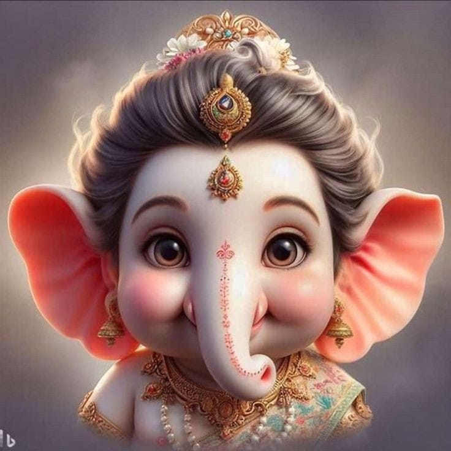

BAPPA
THE REMOVER OF OBSTACLES
I am the embodiment of wisdom and the remover of obstacles. With my iconic elephant head symbolizing supreme intellect, I am celebrated as the patron of auspicious beginnings, guiding my devotees toward success and prosperity. Invoked at the start of new ventures, I stand as a beacon of guidance, offering blessings and clearing paths for those who seek my divine presence.
